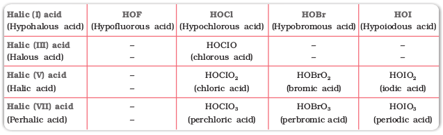
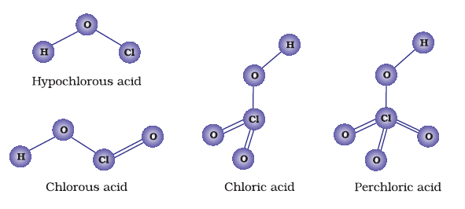

7.21 Oxoacids of Halogens
Due to high electronegativity and small size, fluorine forms only one oxoacid, HOF known as fluoric (I) acid or hypofluorous acid. The other halogens form several oxoacids. Most of them cannot be isolated in pure state. They are stable only in aqueous solutions or in the form of their salts. The oxoacids of halogens are given in Table 7.10 and their structures are given in Fig. 7.8.
Table 7.10: Oxoacids of Halogens


Fig. 7.8 The structures of oxoacids of chlorine